2.River Plate : Roberto Bonano ; Gustavo Lombardi , Roberto Trotta , Mario Yepes , Diego Placente ; Hernán Díaz ( m.20 , Ariel Franco ) , Cristian Ledesma , Leonel Gancedo ( m.84 , Leonardo Ramos ) , Pablo Aimar ( m.77 , Eduardo Berizzo ) ; Javier Saviola y Juan Pablo Angel.
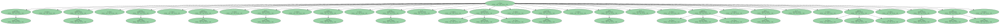1.Boca Juniors : Oscar Córdoba ; Hugo Ibarra , Jorge Bermúdez , Walter Samuel , Rodolfo Arruabarrena ; José Basualdo ( m.79 , Fernando Navas ) , Cristian Traverso ( m.75 , Aníbal Matellán ) , Gustavo Barros Schelotto , Juan Román Riquelme ; Marcelo Delgado ( m.74 , Guillermo Barros Schelotto ) y Alfredo Moreno.
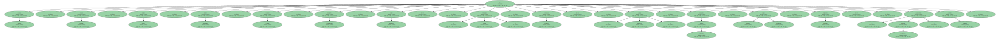Goles : 1-0 , m.14: Angel.
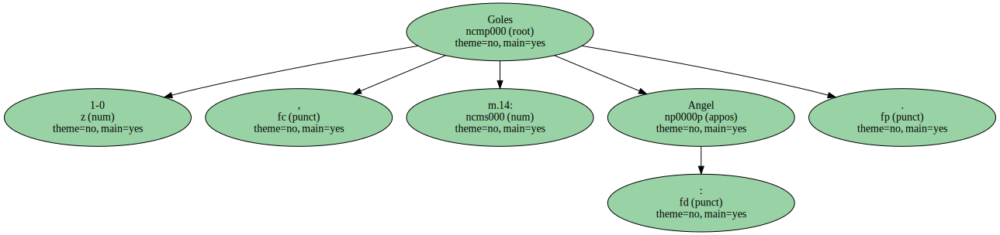1-1 , m.30: Riquelme.
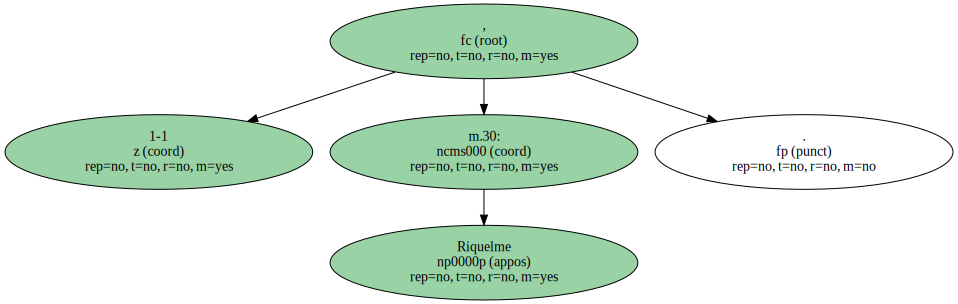2-1 , m.47: Saviola.
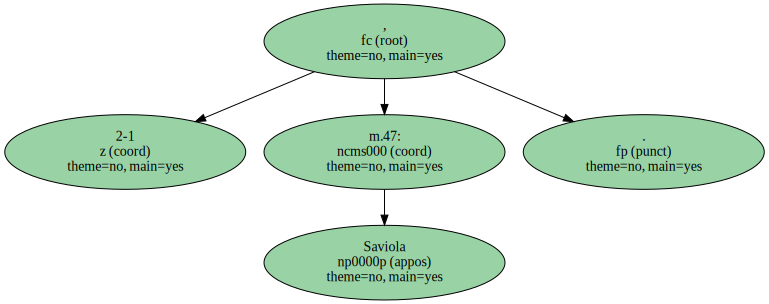Árbitro : Claudio Martín ( ARG ).
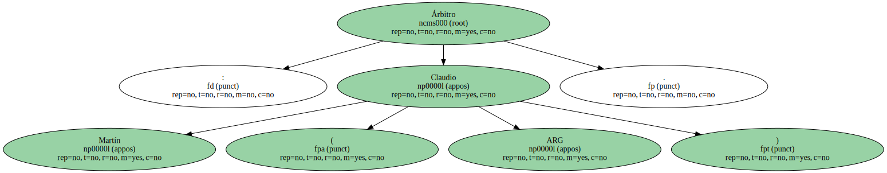Mostró tarjeta amarilla a Traverso , Lombardi , Ledesma , Aimar , Basualdo , Guillermo Barros Schelotto , Ibarra , Matellán y Gustavo Barros Schelotto.

Incidencias : Partido de ida en los cuartos de final de la Copa Libertadores de América , disputado en el estadio Monumental del River Plate ante unos 40.000 espectadores.
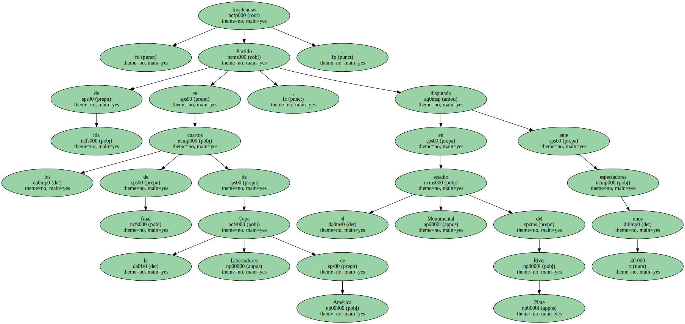Comentario : El River Plate echó mano hoy de la potencia de su ofensiva para vencer por dos goles a uno en casa al Boca Juniors en el partido de ida que ambos equipos argentinos disputaron en los cuartos de final de la Copa Libertadores de América.
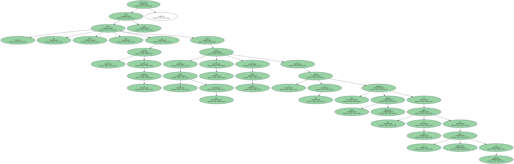El colombiano Juan Pablo Angel , en el minuto 14 , y el juvenil Javier Saviola , en el 47 , anotaron para el River Plate , mientras que el armador Juan Román Riquelme marcó para el Boca Juniors en el 30.
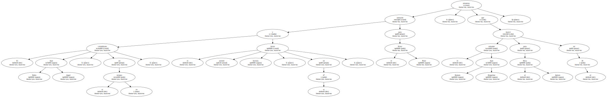El partido terminó en medio de una polémica porque el árbitro Claudio Martín anuló un gol a Guillermo Barros Schelotto en el último minuto de juego , en una decisión muy protestada por los jugadores e hinchas visitantes.

Este " superclásico " entre los equipos con mayores hinchadas del fútbol argentino se disputó tres días después de otro que terminó igualado a un gol en la undécima jornada de la liga de primera división.
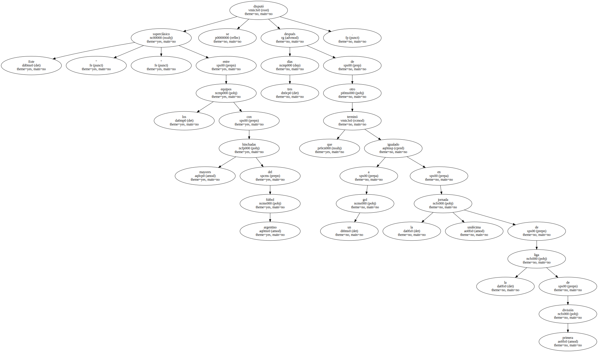Aunque los locales basaron su victoria en la fortaleza y la habilidad de sus delanteros , la actuación del defensa colombiano Mario Yepes fue vital para mantener la ventaja en el segundo tiempo.
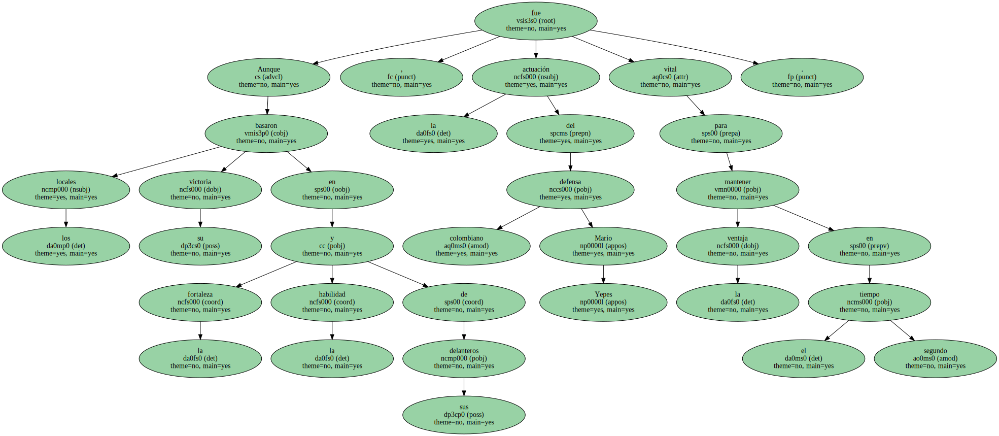La sola presencia de tres futbolistas como Angel , Aimar y Saviola , la síntesis de la potencia ofensiva del River Plate , bastó a los dueños de casa para mantener en guardia al conjunto boquense durante los primeros minutos de juego.
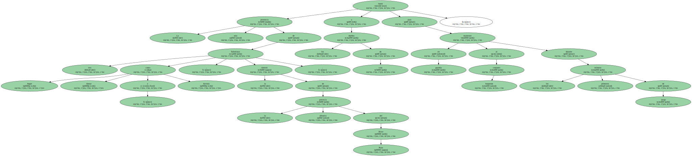En ese lapso del partido , Gancedo se adueñó de la zona media del campo y , con la colaboración de Ledesma , se dedicó a tocar el balón a los habilidosos delanteros , custodiados con excesivo celo por la defensa visitante.
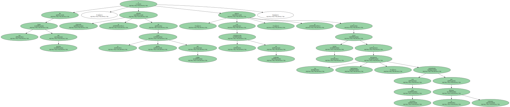Aunque no llegaba frecuentemente con peligro a la puerta del colombiano Oscar Córdoba , el River Plate llevó al marcador el producto de su dominio y anotó en el minuto 14.
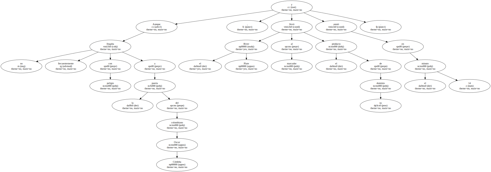El siempre bien ubicado Angel aprovechó un yerro de Córdoba cuando el balón caía al área boquense enviado por el aire desde una banda y lo mandó a la red con un toque corto.
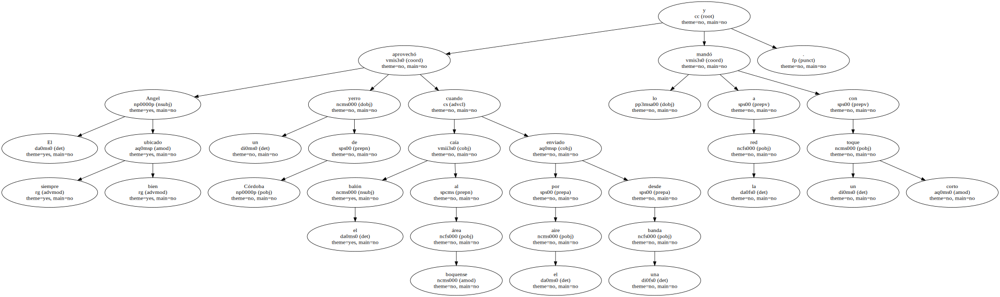El Boca Juniors parecía desbordado por los movimientos de su adversario hasta que Gustavo Barros Schelotto y José Basualdo asumieron su papel de " patrones " en el centro del campo , recuperaron cien balones y pusieron equilibrio en el juego.
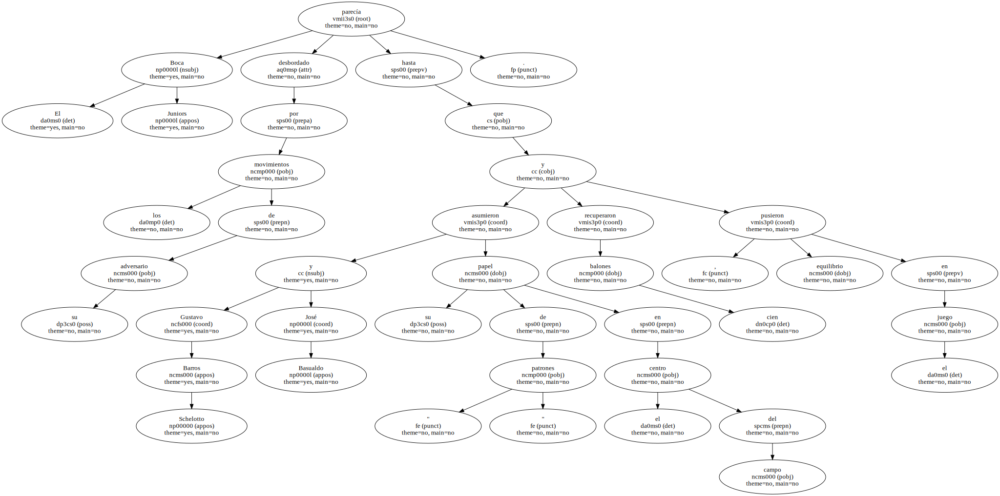La posición y el esfuerzo de estos dos centrocampistas dio más libertad al genial Riquelme para la creación , aunque los delanteros Alfredo Moreno y Marcelo Delgado estaban consumidos por sus marcas.
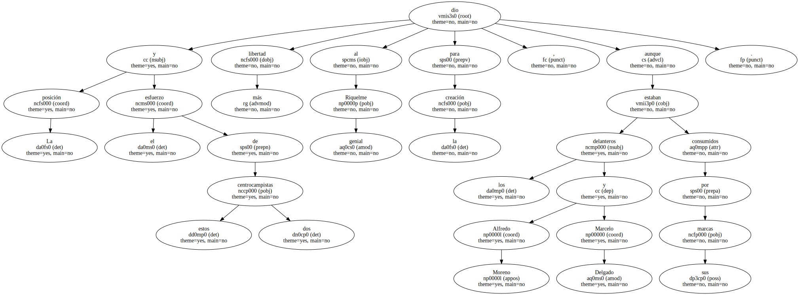Y como los delanteros no aportaban tuvo que hacerse cargo del asunto Riquelme , quien en el minuto 30 ejecutó con maestría un tiro libre a más de 20 metros de la puerta y coló el balón ante un estático Bonano.
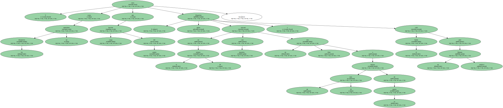Al empate siguió algo de vértigo con jugadas salientes en las que Saviola para el River Plate y Delgado para el Boca Juniors a punto estuvieron de poner en ventaja a sus equipos.
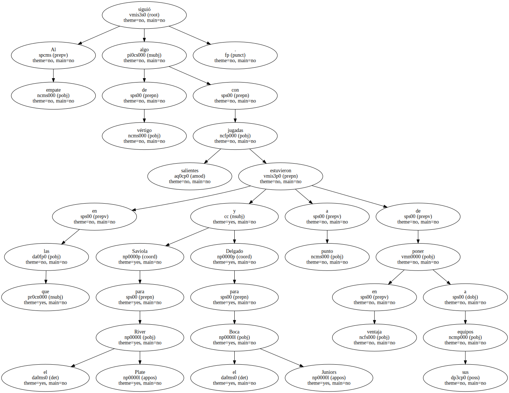La imagen de mayor solvencia que dejó el Boca Juniors antes del descanso quedó hecha añicos en una de las primeras jugadas del segundo tiempo.
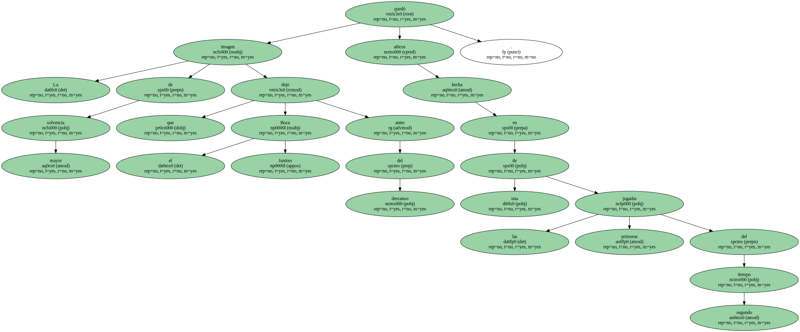En el minuto 47 , el joven Saviola , que juega como un veterano pese a sus 18 años , aprovechó un error de Basualdo , corrió más rápido que el viento durante varios metros y definió ante la salida de Córdoba.
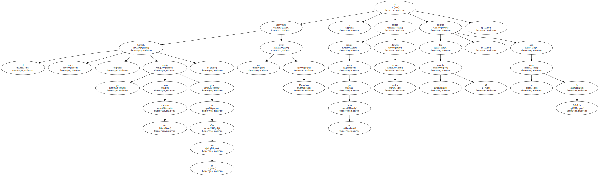El segundo gol calmó las ansias ofensivas del River Plate , que retrasó un poco sus líneas , resistió los desordenados embates del Boca Juniors y quedó dispuesto a explotar el contraataque.
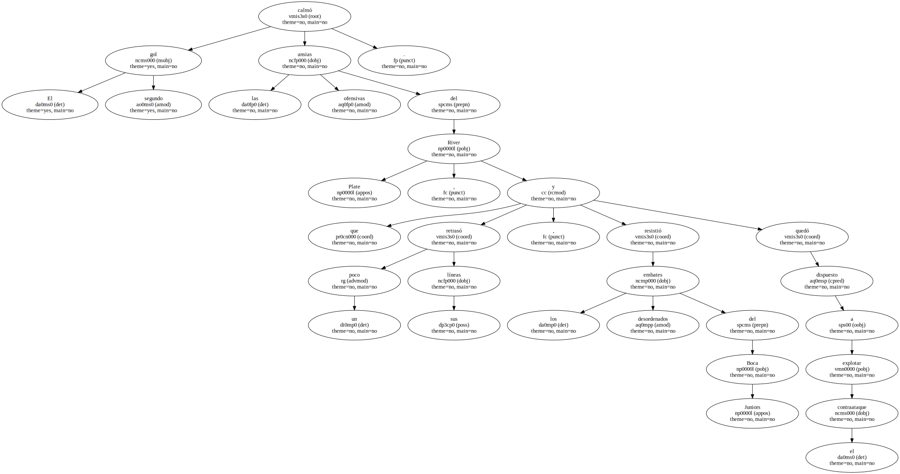Los boquenses , a su vez , no mostraron contundencia en la ofensiva y lo poco que intentaba hacer Riquelme moría en la pared que el juvenil Franco , sustituto del lesionado Hernán Díaz , construyó en la zona media junto a Ledesma y Gancedo.
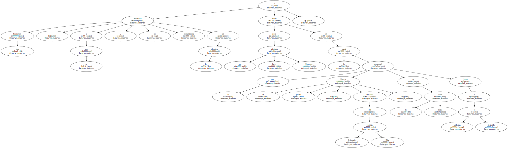Para mal de los visitantes , el colombiano Yepes se lució en la marca de la defensa riverplatense y su figura creció hasta convertirse en la gran estrella del juego.
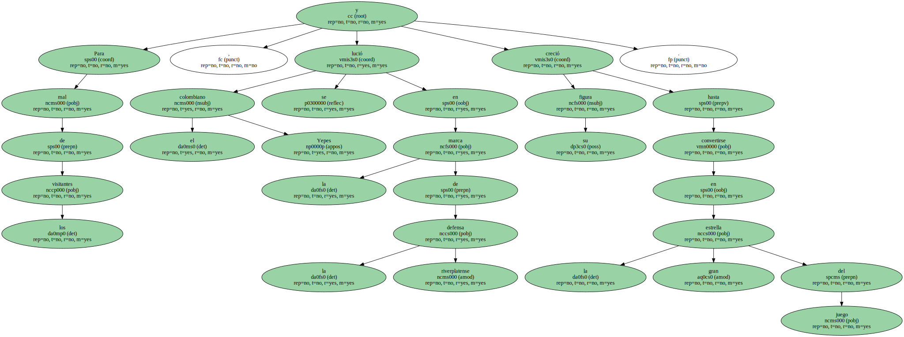